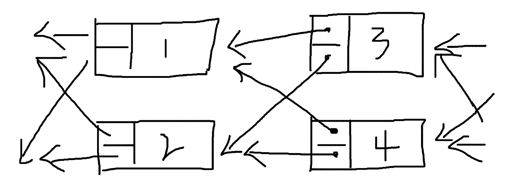

基于 Multi-Linked List 的区块链设想
区块链有没有可能不再是线性的结构，而是有多条链路的、图式的数据结构呢，比如从 singly-linked list 进化到 multi-linked list。假设是 multi-linekd list 的形式，会给区块链带来什么样的变化，或者说，可行吗？
首先是正向的 multi-linked list，像是这样：
然后是适用于区块链的、反向的 multi-linked list，像这样：

对于 multi-lineked list，一种是固定数量的情况，比如每个节点的后续节点一定是 2 个，或者是不固定数量的 multi-linked list，每个节点可以指向任意多个子节点，它们的区别不大。
还有一个分歧是要不要保留块高度的概念，块高度是用来表示块顺序的索引，在多个节点之间同步数据的时候起到很重要的作用，在 multi-linked list 中，如果按照树结构层数来定义块高度，会是这样：
或者可以按照块写入的顺序定义，也就是初始的标号意味着块高度：
对于区块链来说，很重要的是确认数据的完整性，当只有一个子节点的时候，其他节点很容易同步一个块的数据，并且根据 hash values 校验块的有效性。对于 multi-linked list 的情形，这个校验块数据的步骤会复杂一些，但也并非无法处理，只要把原先校验一个块的操作，多几次循环，多校验几次就可以了。
正向和反向 multi-linked list 最大的区别是，一种是向外发散的，会随着层级的增大，每一层容纳的节点数不断增大，指数级增长。另一种是收敛的，每一层的节点数会不断减少，最终只剩下一个。也就是正着的树和倒着的树的区别。

区块链中有一个创始块的概念，如果是正向的 multi-linked list，创世块还是一个保持不变，但是子节点逐渐膨胀以后，会越来越不可控。对于保留块高度的情况，其实除了程序处理多几个步骤，并没有无法实现的理由。对于不保留块高度或者说用索引值代替块高度的情况，块仍然可以一个一个地出，也没有在技术上实现不了的理由，但其实还是链式结构的处理方式。单纯数据结构从 linked list 转为 multi-linked list，似乎没有明确的理由，因为无法想象到，这样做可以带来什么样的好处。
如果是反向的 multi-linked list，一个很大的问题是创世块怎么办，反向的树结构子节点会越来越少，最后只剩一个，难不成创世块规定足够大数量的节点数，然后后期逐步趋于1？这非常不合理，相当于给程序设置了一个停机条件，到达一定块高度后就无法在增加内容了，显然是不可取的做法。
由于树结构的发散或者收敛，multi-linked list 的设想是有问题的。那么这样呢，使用平行的 multi-linked list，可行吗？
因为必须有多个输入和输出，并且输入和输出的数量必须一样，所以使用这样带有重复指向的方式。
同样地，在技术上可行，问题在于，有什么好处呢？这样的数据结构带来了什么？除了程序复杂程度的增加，还有什么？
好像还真有，这样的数据结构，允许同时出两个块。两个节点只要使用相同的父节点，即使没有先后，同一时刻产生了内容，也可以将块累加到链后面，作为子节点。
不过这样又回带来很多问题，比如怎么防止 double-spending ？同一个账户交易分别出现在了两个块里，以哪个为准？分布式系统的数据同步，一定是多点变单点的过程，并行处理的程序也会有一个资源竞争的问题，同时出两个块后还是需要某种机制单点处理数据，同时出块就没有意义了，并不能加快整个系统的数据处理速度。
而且，其实平行的 multi-linked list，可以认为是这样：

这样来看，平行的 multi-linked list 就更没有意义了。
总的来说，区块链有可能基于 multi-linked list 的数据结构吗？似乎没有必要。singly-linked list 是简单的数据结构，但又确实是很适合于区块链的数据结构。
背景知识
Singly-linked list

Singly-linked list 是一种线性的数据结构， 每个节点都包含一个指向下个节点的 field，用于显式表示节点之间的关联关系，一般在程序中会用对象的引用地址来填充这个字段。当然直接使用节点的值也可以，只是为了在数据类型上有明显的区分。
type Node struct {
Value int
Next *Node
}
func main() {
node1 := Node{Value: 1}
fmt.Printf("%p\n", &node1) // 0x14000104210
node2 := Node{Value: 2}
fmt.Printf("%p\n", &node2) // 0x14000104220
node1.Next = &node2
fmt.Println(node1) // {1 0x14000104220}
fmt.Println(node2) // {2 <nil>}
}
node1 的内存地址为 0x14000104210 ，node2 的内存地址为 0x14000104220 ，然后将 node2 的内存地址赋值给 node1 的 next 变量，这个时候只要访问 node1，就可以通过 next 得到 node2 的内容了。以此类推，即使有很多很多 node，只需要知道起始位置 node1 的内容，就可以访问到整个 Linked list 的所有节点了。
Doubly-linked list
Doubly-linked list 在 Singly-lined list 的基础上，多了一个字段，用于保存指向上一个节点的信息。在这样的数据结构下，获得一个节点的内容时，不但可以知道下一个节点的位置，还可以知道上一个节点的位置。
type Node struct {
Value int
Next *Node
Prev *Node
}
(Doubly-linked list) - (Singly-linked list)
Singly-linked list 时保留了下一个节点的信息，Doubly-linked list 上一个和下一个节点的信息都保留了，那么有没有一种数据结构，是只保留上一个节点的信息呢？比如这样：
type Node struct {
Value int
Prev *Node
}
为什么会需要以保留上一个节点信息的形式，构造 Linked list 呢？因为存在这样一种场景：在创建当前节点的时候，下一个节点的内容和引用地址还不确定或者不存在。
当下一个节点内容确定后，还要更改上一个节点的内容吗？Demo 代码改起来是容易的，如果是在一个海量数据的数据库中呢？update 的成本是很高的；如果是在一个分布式系统中呢？网络交互、数据一致性的成本也很高。

也许这样的数据结构并不差劲，它既没有牺牲 Linked list 的特性，又可以在不改动之前节点数据的基础上，使列表不断延长。只不过访问顺序和 Singly-lined list 是相反的，需要按照从最后一个节点向前的顺序才能遍历所有节点，就像是 Singly-linked list 倒过来了。其实倒过来的 Singly-linked list 也是 Singly-linked list。